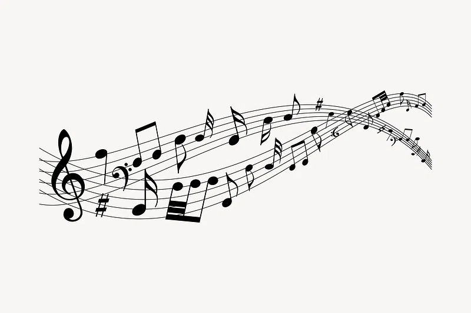

In the most general of terms, music is the arrangement of sound to create some combination of form, harmony, melody, rhythm, or otherwise expressive content.[1][2][3] Definitions of music vary depending on culture,[4] though it is an aspect of all human societies and a cultural universal.[5] While scholars agree that music is defined by a few specific elements, there is no consensus on their precise definitions.[6] The creation of music is commonly divided into musical composition, musical improvisation, and musical performance,[7] though the topic itself extends into academic disciplines, criticism, philosophy, psychology, and therapeutic contexts. Music may be performed or improvised using a vast range of instruments, including the human voice, and thus is often credited for its extreme versatility and opportunity for creativity.[8]
Terminology

Amazing caption
The modern English word 'music' came into use in the 1630s.[9] It is derived from a long line of successive precursors: the Old English 'musike' of the mid-13th century; the Old French musique of the 12th century; and the Latin mūsica.[10][8][n 1] The Latin word itself derives from the Ancient Greek mousiké (technē)—μουσική (τέχνη)—literally meaning "(art) of the Muses".[10][n 2] The Muses were nine deities in Ancient Greek mythology who presided over the arts and sciences.[13][14] They were included in tales by the earliest Western authors, Homer and Hesiod,[15] and eventually came to be associated with music specifically.[14] Over time, Polyhymnia would reside over music more prominently than the other muses.[11] The Latin word musica was also the originator for both the Spanish música and French musique via spelling and linguistic adjustment, though other European terms were probably loanwords, including the Italian musica, German Musik, Dutch muziek, Norwegian musikk, Polish muzyka and Russian muzïka.[14]
The modern Western world usually defines music as an all-encompassing term used to describe diverse genres, styles, and traditions.[16] This is not the case worldwide, and languages such as modern Indonesian (musik) and Shona (musakazo) have recently adopted words to reflect this universal conception, as they did not have words that fit exactly the Western scope.[14] Before Western contact in East Asia, neither Japan nor China had a single word that encompasses music in a broad sense, but culturally, they often regarded music in such a fashion.[17] The closest word to mean music in Chinese, yue, shares a character with le, meaning joy, and originally referred to all the arts before narrowing in meaning.[17] Africa is too diverse to make firm generalizations, but the musicologist J. H. Kwabena Nketia has emphasized African music's often inseparable connection to dance and speech in general.[18] Some African cultures, such as the Songye people of the Democratic Republic of the Congo and the Tiv people of Nigeria, have a strong and broad conception of 'music' but no corresponding word in their native languages.[18] Other words commonly translated as 'music' often have more specific meanings in their respective cultures: the Hindi word for music, sangita, properly refers to art music,[19] while the many Indigenous languages of the Americas have words for music that refer specifically to song but describe instrumental music regardless.[20] Though the Arabic musiqi can refer to all music, it is usually used for instrumental and metric music, while khandan identifies vocal and improvised music.[21]
History
It is often debated to what extent the origins of music will ever be understood,[24] and there are competing theories that aim to explain it.[25] Many scholars highlight a relationship between the origin of music and the origin of language, and there is disagreement surrounding whether music developed before, after, or simultaneously with language.[26] A similar source of contention surrounds whether music was the intentional result of natural selection or was a byproduct spandrel of evolution.[26] The earliest influential theory was proposed by Charles Darwin in 1871, who stated that music arose as a form of sexual selection, perhaps via mating calls.[27] Darwin's original perspective has been heavily criticized for its inconsistencies with other sexual selection methods,[28] though many scholars in the 21st century have developed and promoted the theory.[29] Other theories include that music arose to assist in organizing labor, improving long-distance communication, benefiting communication with the divine, assisting in community cohesion or as a defense to scare off predators.[30]
Prehistoric music can only be theorized based on findings from paleolithic archaeology sites. The Divje Babe flute, carved from a cave bear femur, is thought to be at least 40,000 years old, though there is considerable debate surrounding whether it is truly a musical instrument or an object formed by animals.[31] The earliest objects whose designations as musical instruments are widely accepted are bone flutes from the Swabian Jura, Germany, namely from the Geissenklösterle, Hohle Fels and Vogelherd caves.[32] Dated to the Aurignacian (of the Upper Paleolithic) and used by Early European modern humans, from all three caves there are eight examples, four made from the wing bones of birds and four from mammoth ivory; three of these are near complete.[32] Three flutes from the Geissenklösterle are dated as the oldest, c. 43,150–39,370 BP.
Antiquity
The earliest material and representational evidence of Egyptian musical instruments dates to the Predynastic period, but the evidence is more securely attested in the Old Kingdom when harps, flutes and double clarinets were played.[33] Percussion instruments, lyres, and lutes were added to orchestras by the Middle Kingdom. Cymbals[34] frequently accompanied music and dance, much as they still do in Egypt today. Egyptian folk music, including the traditional Sufi dhikr rituals, are the closest contemporary music genre to ancient Egyptian music, having preserved many of its features, rhythms and instruments.
The "Hurrian Hymn to Nikkal", found on clay tablets in the ancient Syrian city of Ugarit, is the oldest surviving notated work of music, dating back to approximately 1400 BCE.
Music was an important part of social and cultural life in ancient Greece, in fact it was one of the main subjects taught to children. Musical education was considered to be important for the development of an individual's soul. Musicians and singers played a prominent role in Greek theater,[39] and those who received a musical education were seen as nobles and in perfect harmony (as can be read in the Republic, Plato). Mixed gender choruses performed for entertainment, celebration, and spiritual ceremonies.[40] Instruments included the double-reed aulos and a plucked string instrument, the lyre, principally a special kind called a kithara. Music was an important part of education, and boys were taught music starting at age six. Greek musical literacy created significant musical development. Greek music theory included the Greek musical modes, that eventually became the basis for Western religious and classical music. Later, influences from the Roman Empire, Eastern Europe, and the Byzantine Empire changed Greek music. The Seikilos epitaph is the oldest surviving example of a complete musical composition, including musical notation, from anywhere in the world.[41] The oldest surviving work written on the subject of music theory is Harmonika Stoicheia by Aristoxenus.[42]
Western classical
Early music
The medieval music era (500 to 1400), which took place during the Middle Ages, started with the introduction of monophonic (single melodic line) chanting into Catholic Church services. Musical notation was used since ancient times in Greek culture, but in the Middle Ages, notation was first introduced by the Catholic Church, so chant melodies could be written down, to facilitate the use of the same melodies for religious music across the Catholic empire. The only European Medieval repertory that has been found, in written form, from before 800 is the monophonic liturgical plainsong chant of the Catholic Church, the central tradition of which was called Gregorian chant. Alongside these traditions of sacred and church music there existed a vibrant tradition of secular song (non-religious songs). Examples of composers from this period are Léonin, Pérotin, Guillaume de Machaut, and Walther von der Vogelweide.
Renaissance music (c. 1400 to 1600) was more focused on secular themes, such as courtly love. Around 1450, the printing press was invented, which made printed sheet music much less expensive and easier to mass-produce (prior to the invention of the press, all notated music was hand-copied). The increased availability of sheet music spread musical styles quicker and across a larger area. Musicians and singers often worked for the church, courts and towns. Church choirs grew in size, and the church remained an important patron of music. By the middle of the 15th century, composers wrote richly polyphonic sacred music, in which different melody lines were interwoven simultaneously. Prominent composers from this era include Guillaume Du Fay, Giovanni Pierluigi da Palestrina, Thomas Morley, Orlando di Lasso and Josquin des Prez. As musical activity shifted from the church to aristocratic courts, kings, queens and princes competed for the finest composers. Many leading composers came from the Netherlands, Belgium, and France; they are called the Franco-Flemish composers.[55] They held important positions throughout Europe, especially in Italy. Other countries with vibrant musical activity included Germany, England, and Spain.